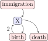
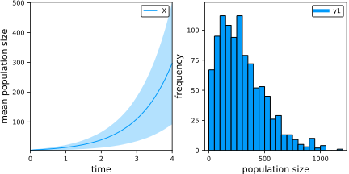
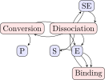
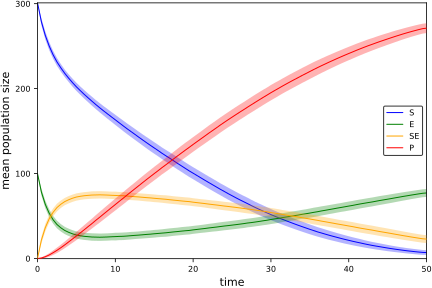
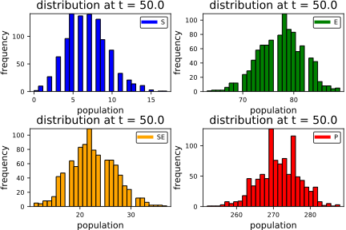
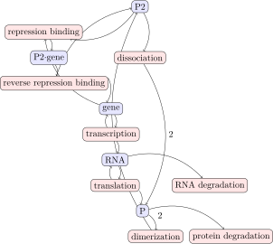
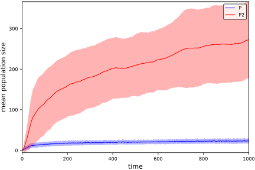
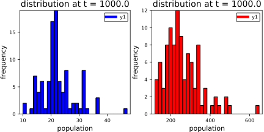
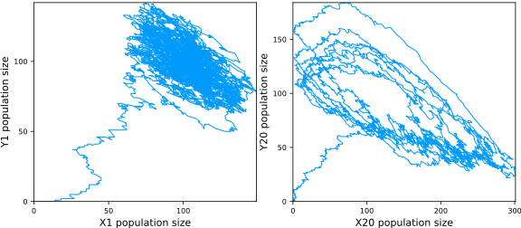

Examples
Birth-Death-Immigration Process
Kendall's process is a birth-death-immigration process describing the dynamics of a population using a continuous-time Markov chain. Individuals in the population behave as particles that reproduce at a rate $\alpha$, decay at a rate $\mu$, and immigrate into the population at a rate $\nu$.
model = Network("Kendall's Process")
model <= Species("X", 5)
model <= Reaction("birth", 2.0, "X --> X + X")
model <= Reaction("death", 1.0, "X --> 0")
model <= Reaction("immigration", 0.5, "0 --> X")
fig = visualize(model)
using TikzPictures; save(SVG("kendallfig"), fig) # hide
result = simulate(model, algorithm=SSA, time=4.0, epochs=40, trials=1000)
plot(
plot(MeanTrajectory(result, "X")),
plot(Histogram(result, "X", 4.0)),
layout = 2,
size = (600,300)
)WARNING: No working GUI backend found for matplotlib
sys:1: MatplotlibDeprecationWarning: The set_axis_bgcolor function was deprecated in version 2.0. Use set_facecolor instead.
Enzyme Kinetics
Michaelis-Menten enzyme kinetics is a stepwise process combining first- and second order reactions to describe the conversion of a substrate into a product. An enzyme $E$ binds to a substrate $S$ to form a complex $SE$. Conversion does not happen immediately, so $SE$ may revert to its two components or result in a product $P$ and enzyme $E$.
model = Network("enzyme kinetics")
model <= Species("S", 301)
model <= Species("E", 100)
model <= Species("SE", 0)
model <= Species("P", 0)
model <= Reaction("Binding", 0.00166, "S + E --> SE")
model <= Reaction("Dissociation", 0.0001, "SE --> S + E")
model <= Reaction("Conversion", 0.1, "SE --> P + E")
fig = visualize(model)
using TikzPictures; save(SVG("mmekfig"), fig) # hide
result = simulate(model, algorithm=SSA, time=50.0, epochs=100, trials=1000)
plot(MeanTrajectory(result, "S"), color="blue")
plot!(MeanTrajectory(result, "E"), color="green")
plot!(MeanTrajectory(result, "SE"), color="orange")
plot!(MeanTrajectory(result, "P"), color="red")
plot(
plot(Histogram(result, "S", 50.0), label="S", color="blue"),
plot(Histogram(result, "E", 50.0), label="E", color="green"),
plot(Histogram(result, "SE", 50.0), label="SE", color="orange"),
plot(Histogram(result, "P", 50.0), label="P", color="red")
)
Auto-Regulatory Gene Network
The influence of noise at the cellular level is difficult to capture in deterministic models. Stochastic simulation is appropriate for the study of regulatory mechanisms in genetics, where key species may be present in low numbers.
function autoreg(;k1=1.0, k1r=10.0, k2=0.01, k3=10.0, k4=1.0, k4r=1.0, k5=0.1, k6=0.01)
model = Network("auto-regulation")
model <= Species("gene", 10)
model <= Species("P2_gene", 0)
model <= Species("RNA", 0)
model <= Species("P", 0)
model <= Species("P2", 0)
model <= Reaction("repression binding", k1, "gene + P2 --> P2_gene")
model <= Reaction("reverse repression binding", k1r, "P2_gene --> gene + P2")
model <= Reaction("transcription", k2, "gene --> gene + RNA")
model <= Reaction("translation", k3, "RNA --> RNA + P")
model <= Reaction("dimerization", k4, "P + P --> P2")
model <= Reaction("dissociation", k4r, "P2 --> P + P")
model <= Reaction("RNA degradation", k5, "RNA --> 0")
model <= Reaction("protein degradation", k6, "P --> 0")
return model
end
model = autoreg()
fig = visualize(model)
using TikzPictures; save(SVG("genefig"), fig) # hide
result = simulate(model, algorithm=SSA, time=1000.0, epochs=500, trials=100)
plot(MeanTrajectory(result, "P"), color="blue")
plot!(MeanTrajectory(result, "P2"), color="red")
plot(
plot(Histogram(result, "P", 1000.0), color="blue"),
plot(Histogram(result, "P2", 1000.0), color="red"),
size = (600,300)
)
Brusselator Cascade
The Brusselator is a theoretical model used to study autocatalytic reactions. The reactions in the model are
\[A \to X\]\[2X + Y \to 3X\]\[X + B \to Y + D\]\[X \to E,\]
where $A$, $B$, and $D$ are chemical species assumed to be constant in concentration; only $X$ and $Y$ vary over time.. The species $A$ and $B$ act as inputs to the synthesis and conversion of $X$, whereas $D$ and $E$ are byproducts with no impact on the system. The $Y$ species acts as a catalyst to the synthesis of $X$ so that $X$ is autocatalytic. Note that the last reaction can be thought of as the decay of $X$.
One can study the role of stochasticity in chemical reaction cascades by coupling Brusselators[16]. A cascade with $N$ steps is modeled as
\[A \to X_{1}\]\[2 X_{n} + Y_{n} \to 3 X_{n}; n = 1,\ldots,N\]\[X_{n} + B \to Y_{n} + D; n = 1,\ldots,N\]\[X_{n} \to X_{n+1}; n = 1,\ldots,N-1\]\[X_{N} \to E,\]
where the $X_{n} \to X_{n+1}$ reactions effectively couple each Brusselator. The fixed point of the system is given by the concentrations of $A$ and $B$: $([X_{n}], [Y_{n}]) = ([A], [A] / [B])$ for each $n = 1,\ldots,N$, which is stable for $[B] < [A]^{2} + 1$ and unstable for $[B] > [A]^{2} + 1$. A limit cycle exists in the unstable case which propagates noise down the steps in the cascade. A deterministic model predicts asymptotic stability at the end of the cascade, but small fluctuations from the fixed point are amplified in the stochastic setting.
This example walks through an implementation of the Brusselator cascade, including conversion of deterministic rates to stochastic rates.
model = Network("Brusselator")
N = 20 # number of Brusselators
V = 100.0 # system volume
# ===== Deterministic Rates =====
k1 = 1.0 # buffer rate
k2 = 1.0 # transition/decay rate
k3 = 1.0 # conversion rate
k4 = 1.0 # autocatalytic rate
# ===== Stochastic Rates =====
# To model a constant buffer X0 we add a zero-order reaction (like immigration)
# The stochastic rates have to take into account the system volume
γ1 = k1 # buffer rate
γ2 = k2 / V # transition/decay rate
γ3 = k3 / V # conversion rate
γ4 = 2 * k4 / (V * V * V) # autocatalytic rate
for i = 1:N
# species definitions
model <= Species("X$(i)", 0)
model <= Species("Y$(i)", 0)
# autocatalytic reactions
model <= Reaction("conversion$(i)", γ3, "X$(i) --> Y$(i)")
model <= Reaction("autocatalysis$(i)", γ4, "X$(i) + X$(i) + Y$(i) --> X$(i) + X$(i) + X$(i)")
end
for i = 2:N
# cascades
model <= Reaction("cascade$(i)", γ2, "X$(i-1) --> X$(i)")
end
model <= Reaction("buffer", γ1, "0 --> X1")
model <= Reaction("decay", γ2, "X$(N) --> 0")The phase portrait of the system comparing $X_{1}$ and $Y_{1}$ against $X_{N}$ and $Y_{N}$ shows that noise at the first step is propagated to the final step in the cascade over time.
result = simulate(model, time=10_000.0, epochs=10_000)
plot(
plot(PhaseTrajectory(result, "X1", "Y1", 1)),
plot(PhaseTrajectory(result, "X$(N)", "Y$(N)", 1)),
size=(800,350)
)